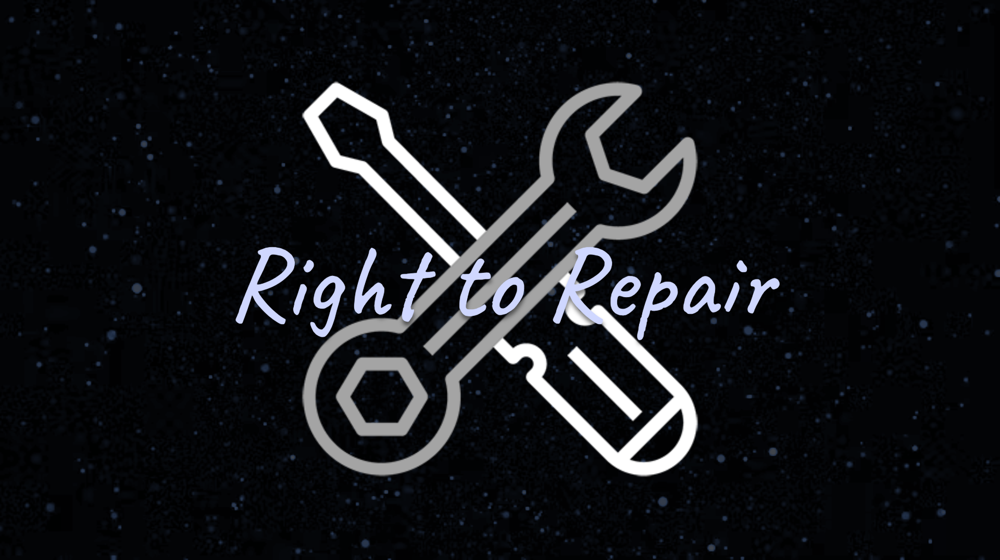

Quick Links
Featured

Right to Repair
Right to Repair is the idea that consumers and businesses should be provided the tools and access to products that they bought and own so that they can repair or modify the product as they wish without the threat of legal action against them. Section 1201 of the DMCA challenges this idea, making it illegal to break or bypass "digital locks" on products (which repairs and modifications often need to do) without authorization, enabling corporations to threaten consumers who wish to repair or modify products that they own, or charge businesses in order to receive an authorized repair, which deters them from repairing the product in question in the first place (ex. McDonald's Ice Cream Machines).
Learn More Take ActionWhat Is This Club?
Consumer Rights Club (CRC) is a club that plans to teach, discuss, and contribute to consumer rights topics, debates, and awareness. CRC hopes to push for significant change in our government and society, in order to foster a healthier space for the average consumer within the US, by spreading awareness about the abuse of their rights, and taking action to protect those rights.
Learn More